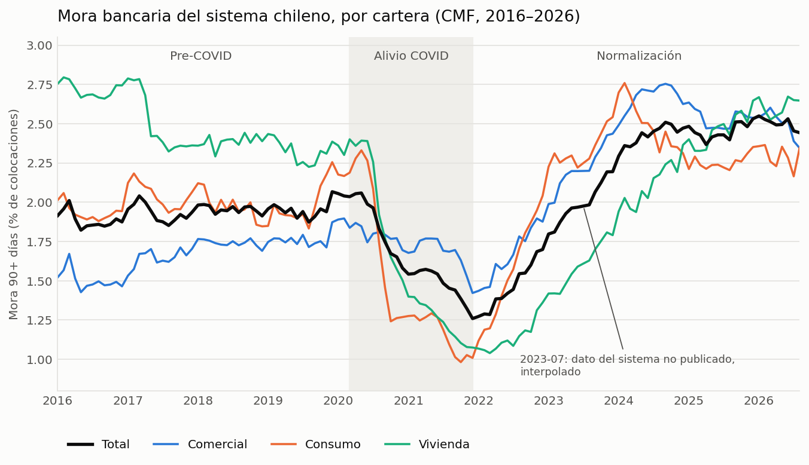
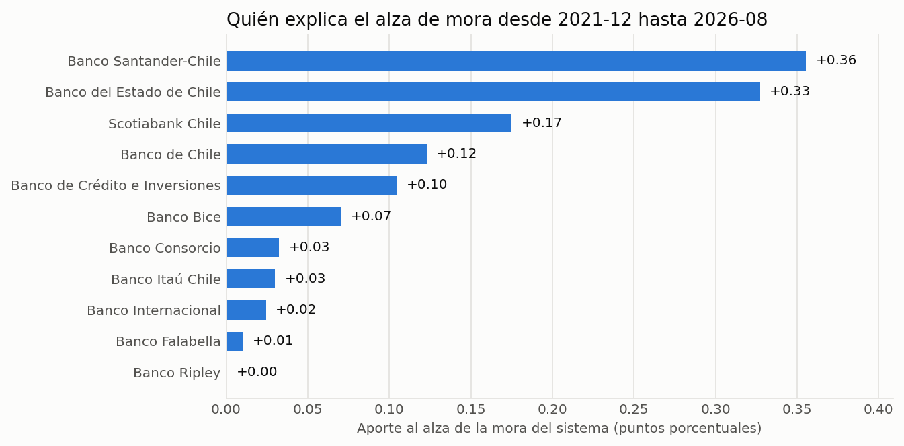
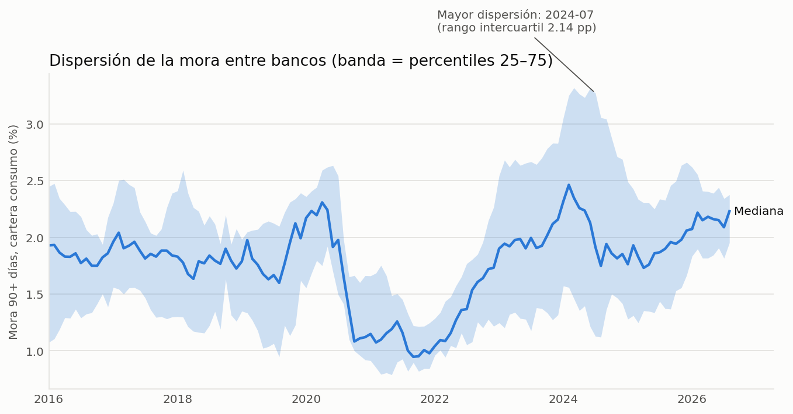
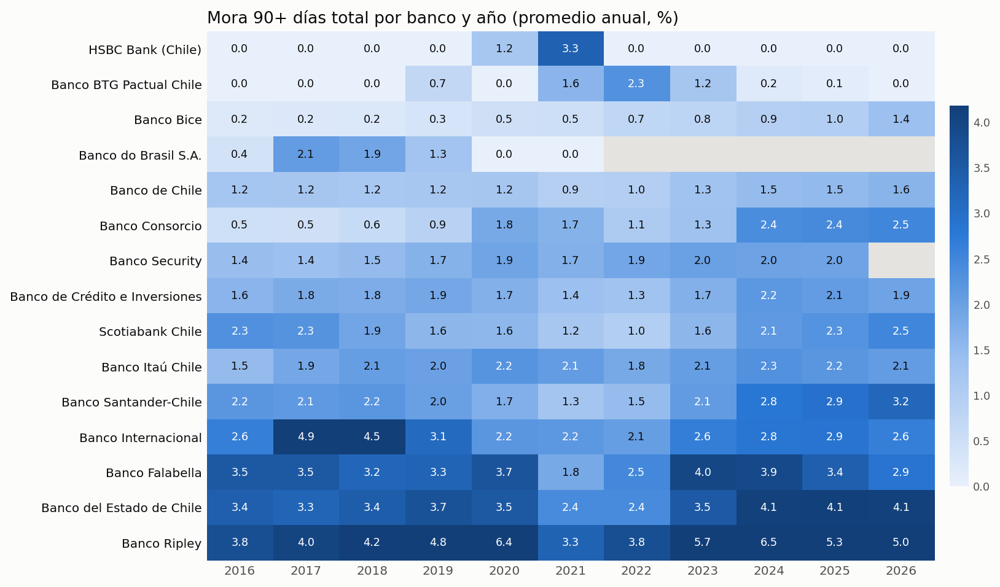
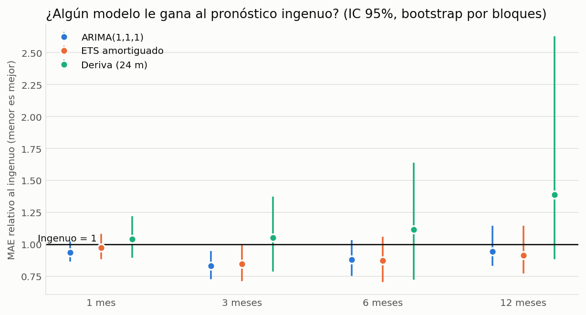
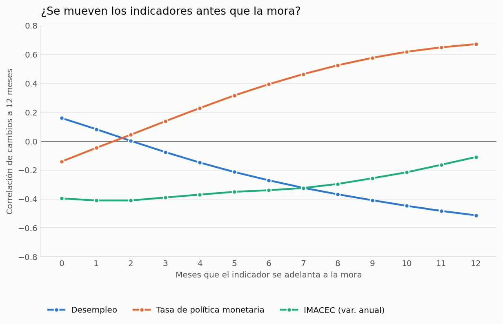
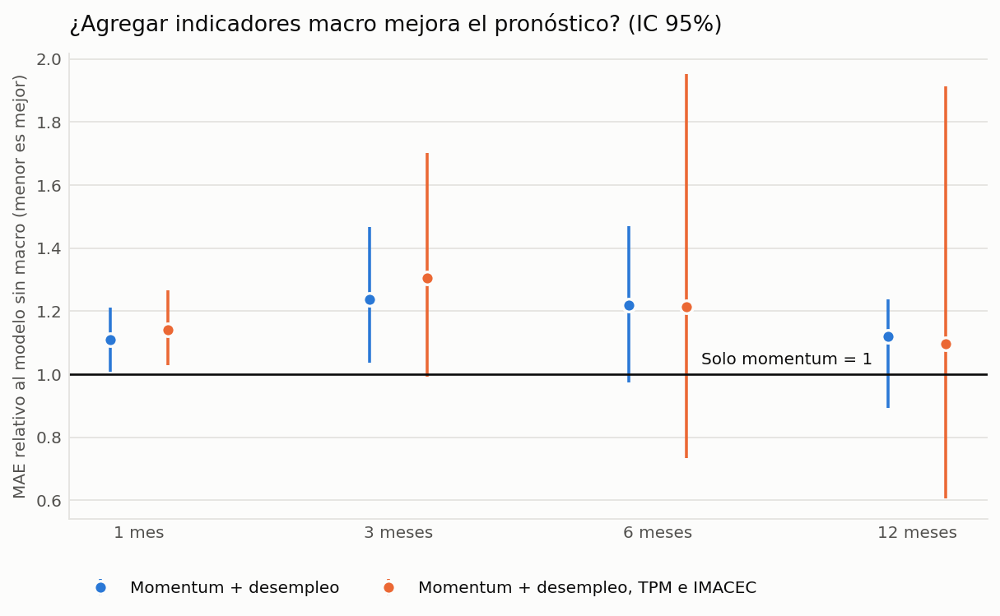
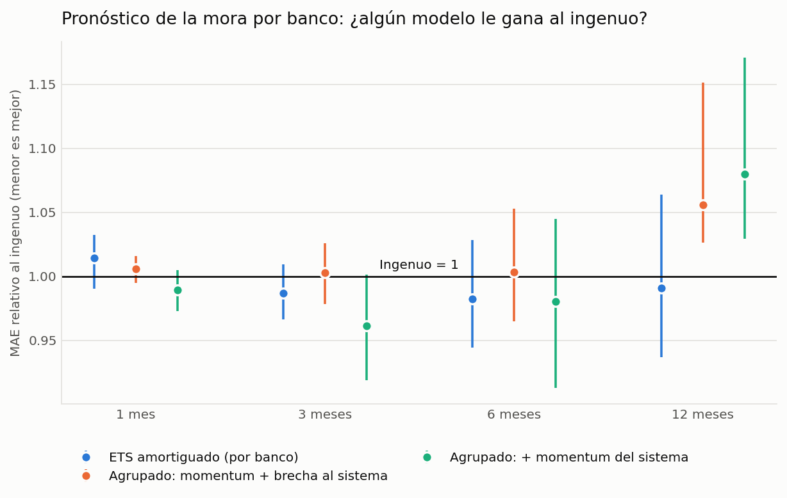
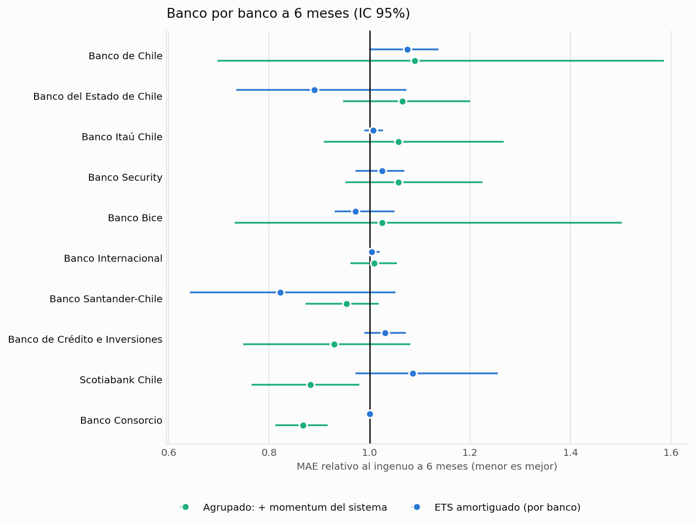

This page shows the project's results. The methodology, the design decisions and the limitations are documented in the repository's README.
Chilean bank delinquency, 2016–2026 — a monthly panel from the CMF

Interactive page: explore any bank against the system and read the forecasting results.
2. The rise since the trough is deterioration inside banks, not a change in who lends

3. Banks converge in a crisis and diverge in a recovery


4. Beating "same as today" is hard, and the evidence is thin

5. Macro indicators do not improve the forecast

- The policy rate, a year earlier, correlates strongly with the rise in arrears: consistent with rate rises passing through to borrowers, which I did not test as a causal claim.

- Adding macro raises the error by 10 to 30% relative to momentum alone. At 1 and 3 months for unemployment, and at 1 month for all three, the interval excludes 1: it is worse, not just no better. Elsewhere the intervals include 1.
6. Individual banks are close to a random walk

- No model clearly beats "same as today" at any horizon. The closest is the pooled model with the system's momentum at 3 months (0.96), whose interval touches 1.00.

Bank by bank at 6 months, two intervals for the pooled model exclude 1: Banco Consorcio (0.87 [0.81, 0.92]) and Scotiabank Chile (0.88 [0.77, 0.98]). With 20 intervals (10 banks, 2 models), one or two falling outside by chance is expected, so I do not read them as banks that are predictable.